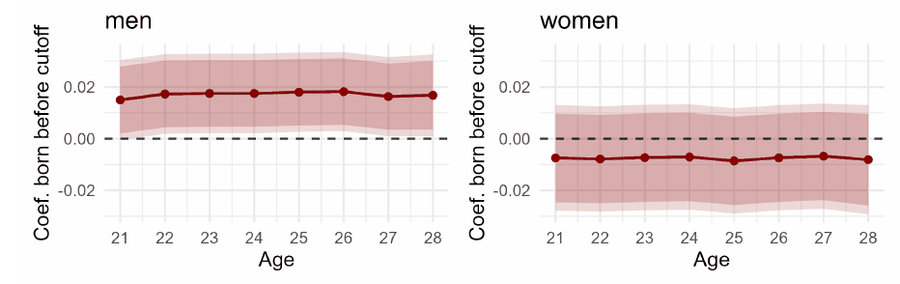

Service Shapes Careers: Conscription and Occupational Choice
This paper examines how exposure to specific occupations at a formative moment affects individuals’ subsequent occupational choice. I leverage the 2011 abolition of German military service and its social service equivalent to estimate this effect, using a difference-in-discontinuities design based on school entry cutoffs. Graduating in time to be exposed to military or social service increases young men’s likelihood of working in occupations related to the social alternative service, particularly social work, and in occupations with a higher female share. Broad tertiary educational outcomes are not significantly affected, nor are wages and working days at age 28.
Draft available upon request.
